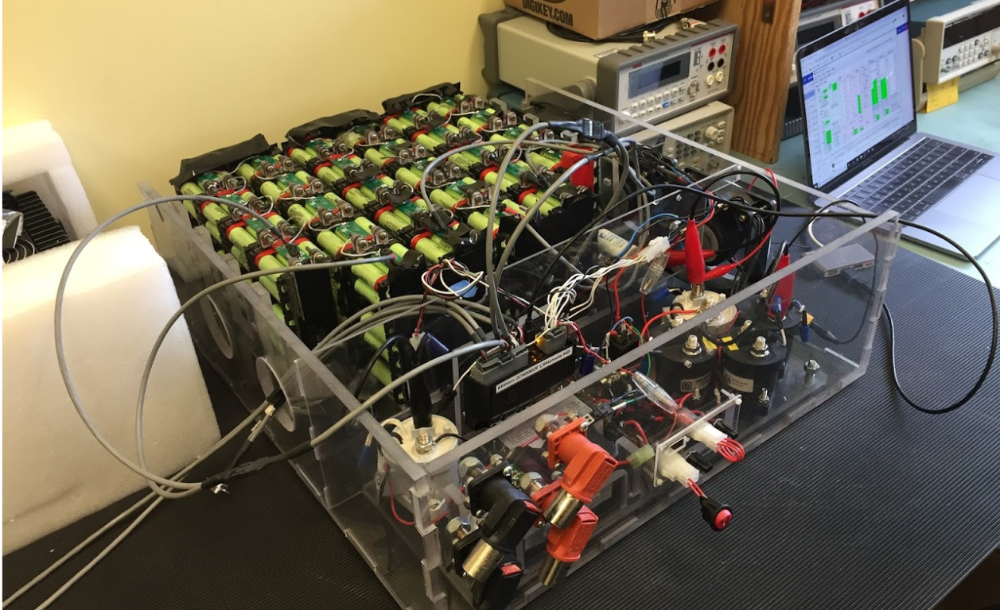
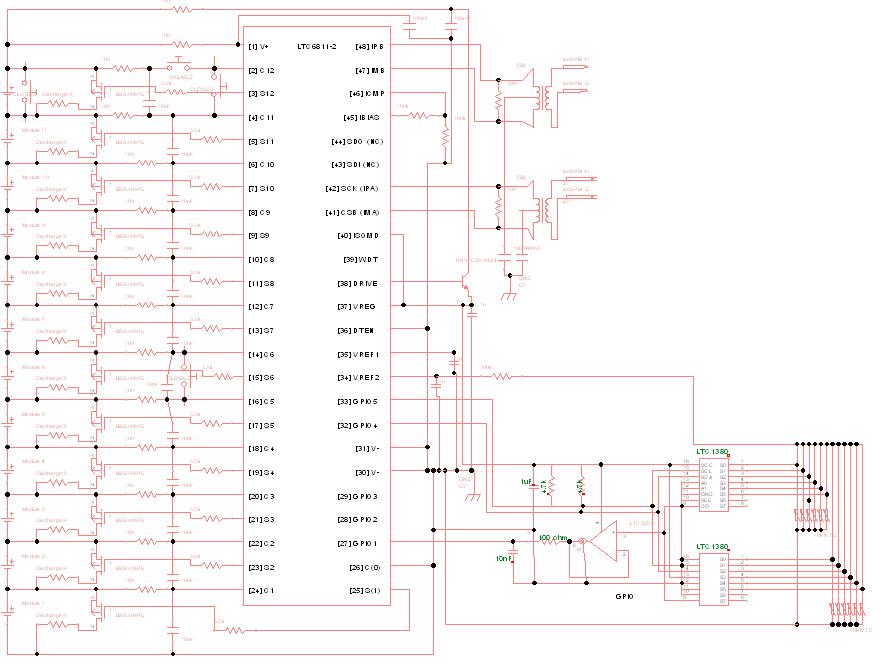
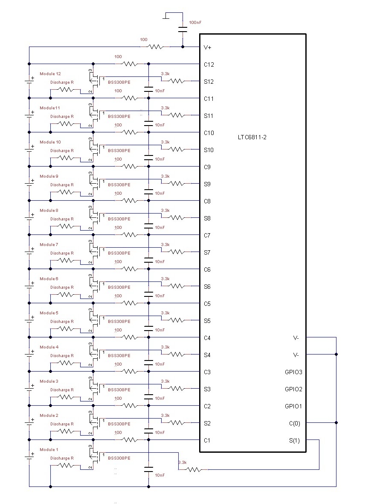
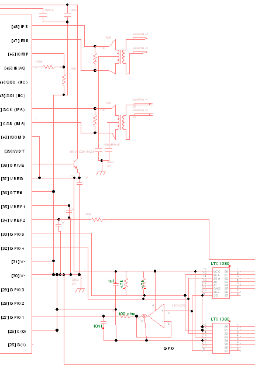
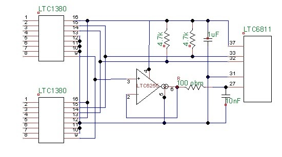
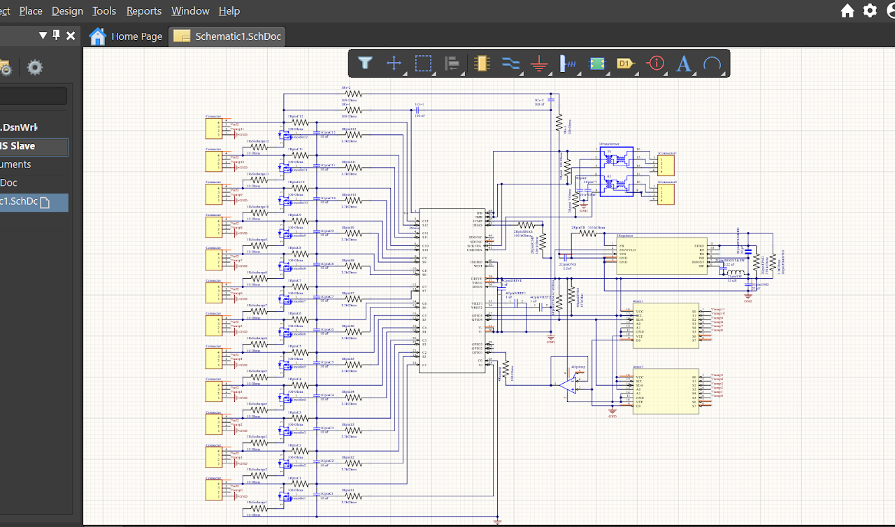
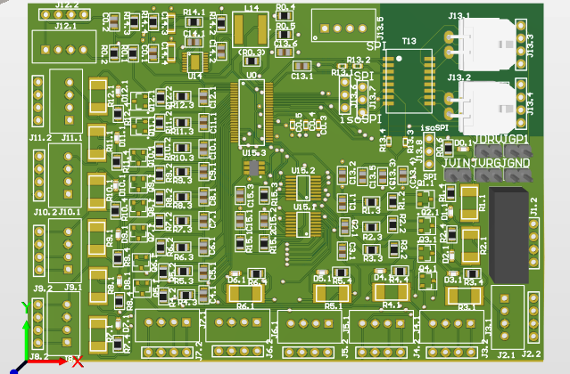
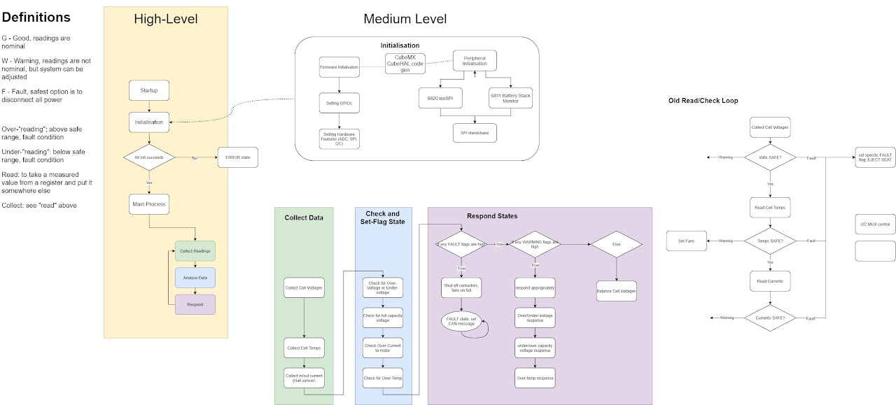

UBC SOLAR
I have been part of UBC Solar, an engineering design team that builds an solar-powered electric race car, since September 2018, and since September 2019 I became the BMS (Battery - Management - System) team Lead.
I am passionate about this design team because it is necessary to shift toward a greener future, and UBC Solar works toward building a car that not only runs, but races, on a completely sustainable energy source.
Backstory:
I started out on Solar as a part of the Battery Subteam in my second year at UBC. I thought this was the best way to learn everything I need to know about how Electric cars run, but, as many complex topics, it was only the tip of the iceberg. I spent the year helping our team lead design and build module enclosures for the battery, and assembling the battery box, and other bits of PCB Design work around the Low Voltage System of the car. Once the end of the term came around, we completed the battery, ready to be put in the car for the upcoming race that takes place in July. And our team lead was ready to leave off for his Co-op program outside of Vancouver.

Our Battery Pack
Life on the Battery Sub-team
In September of 2018, I became a part of the Battery Sub-team on UBC Solar, where our job was to make a Battery Pack for the car. Here, I got experience 3D printing, spot welding, and laser cutting various different parts for the module enclosures and battery pack, as well as getting a chance to do a bit of design work on SolidWorks and OnShape.
We assembled our entire battery pack together, and had it ready to go months before our race was scheduled. I moved to helping out other subteams, and picked up small projects such as using Altium Designer to make the PCB for the dashboard, which gave me my first experience soldering, prototyping, and testing a PCB.
Nearing the End of April...
However, just a few days before our previous team-lead was scheduled to fly off to co-op, the BMS started faulting. This is the most important part of the battery pack, as it monitors and controls each of the modules, and it started telling us there was a fault somewhere in our system. We had tested our battery multiple times, with the motors of the car, so we thought that it was just the BMS that broke because it stopped seeing our batteries all together. We ordered a new one. The team lead left. And my job was to plug it in, give my thumbs up of approval, and put the battery back in the car.
However, the new one broke too as soon as we plugged it into our battery box.
This time we knew something was wrong with our system. But our team lead was gone. The rest of the battery team was also gone over the summer. But we had a race in July we needed to be prepared for.
So the Elec Lead, and I spent countless hours and nights debugging every possible thing that could have caused the BMS to break. The problem was, the BMS basically acted as a giant black box that we knew none of the internal circuitry of. All we knew was that, at one instance a high volt line from the battery passed down to one of the 12V of the BMS, and fried one of its circuits. But which one? Why did this problem just occur after we had already tested our system multiple times? And why, when we connected a probe to each of the possible entries to the BMS, do we never see anything more than 12V?
We spent night after night following every route in the low voltage schematic, high voltage schematic, testing the cell boards on each module, and every input to the BMS to track down this problem. We had multiple Skype calls with the company that sold us the BMS. And essentially re- assembled the entire battery pack. And this was all while I was in "Robot Summer", what EngPhys usually constitutes as one of the most intensive summer course loads. But it was all worth it in the end, when we got the battery to work again.
And, it inspired us to begin our next project. Making our very own Battery Management System for our battery pack.
The BMS Team
We are currently in the process of developing an in-house battery management system for our vehicle. This system will monitor, and control the car’s battery pack, where the utmost assurance and safety is required. This system performs passive cell balancing, monitors the module voltage and temperature, as well as control the start-up sequence of the car.
This project entails building three main PCB's. The first is a cell board that is placed on top of each battery module. This PCB has to take sense inputs for the voltage and temperature of the module. The next PCB contains a battery stack monitor chip, where each of the inputs are given to and processed. That chip communicates through ISOspi to our micro-controller, which lies on the last, master PCB.
Schematics
We are using a battery stack monitor chip, the LTC6811-1 which takes in inputs from each battery module. The complete schematic of what is connected to one chip is shown to the right. The two most important circuits for our purposes are the balancing circuit, and the temperature sense circuit.


The Balancing Circuit
One of the most crucial elements to a battery pack, is keeping each module balanced between each other, so every module would be at roughly the same voltage. At the very left of this circuit, you'll see little battery symbols. The chip can connect to up to 12 of them. Those are our batteries. The C pins on the LTC6811 sense the voltage of the battery, each C pin is referenced against the one right below. When they are out of balance, the S pins act as digital outputs to drive the gate of the MOSFETS, connecting the module to a discharge resistor, up until the modules are at the same voltage again.
Temperature Sensing
The right side of the chip contains the temperature sensing circuit and the ISOSPI bus.
The LTC6811's are one of the best chips to use to monitor battery packs, they're widely used, have a lot of documentation for the proper way to implement them and are able to perform almost all the functionality we need. However, they have one major drawback. Each chip connects to up to 12 modules to monitor at a time, however they only have 5 extra GPIO's to monitor the temperature. To overcome this problem we used multiplexers to expand our analog inputs from 5 to 16. Lets take a closer look at this:


The Multiplexer
This circuit is to allow us to take additional temperature measurements so we can have a temperature sensor on each module. The LTC1380 is the multiplexer, and the buffer amplifier is selected to increase the usable throughput rate.
The GPIO1 (pin 27) adc input is used for measurement, and the mux control is provided by the I2C port on GPIO 4 and GPIO 5 (pin 32 and 33). Pin 37 is Vreg and pin 31 is GND.
Here is an updated version of our schematic design on Altium. Of course, in the real Altium project we used nets for the wire labels to avoid mistakes in the connections, but I chose this picture to show the entire circuit diagram on here without the need of reading the net labels.

Final PCB
The moment we have all been working towards since starting life on the BMS Subtem, here is my final PCB.

Software in the BMS
We are currently using an STM32F303 micro controller which acts as the BMS master. This takes in the inputs from the LTC6811 chips, and decides what to do with them, then passes on critical information about the battery through CAN to the rest of the vehicle's network, as well as controlling the startup sequence of the car. How does it work? The LTC6811 chips are placed close to the battery modules in order to take the sense readings most accurately. However, since the battery pack of a car is an extremely noisy environment, we take advantage of the isoSPI protocol of the LTC6811's, that can pass on the sense readings to a translator on the master board, on the other side of the battery pack, away from the modules. This then passes the message to our micro-controller in SPI.
Luckily, the LTC6811 (our BMS chip) takes care of encoding SPI to isoSPI. This basically just turns our regular SPI signal into a differential signal, isolates it from either of the chips, and passes it through a pair of twisted wires, all to make our communication between the slave (our BMS Chip, the LTC6811) and the Master (our STM32 micro-controller) crystal clear. We then use another chip to decode the isoSPI signal back to spi, and we can read and write to it as we would a regular SPI signal from the STM32.
The Architecture
On a high level, the BMS has to do 3 main things:
- Balance the cells
- Assign its own states
- send the information it gathers to the telemetry interface of the car
To Balance the cells, it reads the voltage from each module of the battery pack. If they differ by a certain percentage, the STM32 has to activate the corresponding pins on the LTC6811, that gate the mosfet and let the module discharge through the discharge resistor.
To assign the states, we are using a finite state machine to tell when the BMS is either over-temperature, over-voltage, under-voltage, and over-current, and any other fault in our system.
Lastly, we are using CAN to send the information of the BMS states, Balancing Status, and any other information out to other parts of the car.
